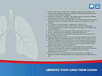

SITEMAP

- 
14,15
- 14.Dirksen H. Hermansen F. Groth S. Molgaard F. Mucociliary Clearance in Early
Simple Chronic Bronchitis. Eur J Respir Dis 71 (Suppl 153) 145-149 (1987) - 15.P87-1619 -Germouty J, Jirou-Najou JL 4TH Cong of the European Society of
Pneumology (SEP) New Aspects in the Treatment of Pulmonology and Upper
Airways Diseases, Milan & Stresa 23-28 Sep 1985 Respiration 51
(Suppl 1), 37-41 (1987)
Liberates your lungs from cough